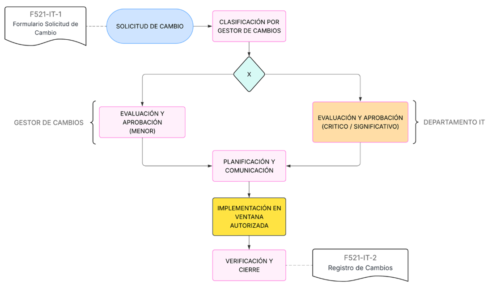

Procedimiento de Gestión de Cambios
1 OBJETIVO
Establecer un procedimiento formal y estandarizado para la gestión de cambios en los sistemas de información, infraestructura crítica y procesos operativos de PRODISMO SRL, con el fin de garantizar que dichos cambios sean evaluados, aprobados, implementados y documentados de manera controlada, minimizando riesgos y asegurando la estabilidad y seguridad del entorno tecnológico. Este procedimiento se alinea con los requisitos de ISO/IEC 27001:2022, TISAX y clientes automotrices.
2 ALCANCE
Este procedimiento aplica a:
- Todos los cambios realizados en sistemas, aplicaciones, redes, infraestructura tecnológica y procesos bajo el alcance del Sistema de Gestión de la Seguridad de la Información (SGSI).
- Todo el personal interno (empleados, contratistas) y terceros que realicen cambios en el entorno tecnológico de PRODISMO SRL.
- Todos los entornos (producción, desarrollo, pruebas) que alberguen activos de información de la organización.
3 DEFINICIONES
| Término | Definición |
|---|---|
| Cambio Crítico | Modificación con alto impacto en seguridad, disponibilidad o integridad de sistemas críticos. Requiere aprobación formal del Departamento de IT. |
| Cambio Significativo | Modificación con impacto medio en operaciones o seguridad. Requiere revisión y aprobación del Departamento de IT. |
| Cambio Menor | Modificación de bajo riesgo e impacto. Puede ser aprobado de forma simplificada. |
| Ventana de Cambio | Período de tiempo autorizado para la implementación del cambio. |
4 PROCEDIMIENTO
4.1. Solicitud de Cambio
- El Solicitante completa el
F521-IT-1
Formulario de Solicitud de Cambio
Incluyendo:- Descripción detallada del cambio.
- Justificación y beneficio esperado.
- Impacto en sistemas, procesos o usuarios.
- Plan de reversión en caso de fallo.
- Ventana de cambio propuesta.
4.2. Clasificación del Cambio
El Gestor de Cambios clasifica el cambio según su impacto y riesgo:
| Tipo | Criterios | Aprobador |
|---|---|---|
| Crítico | Alto impacto en seguridad, disponibilidad o integridad | Departamento IT |
| Significativo | Impacto medio en operaciones o seguridad | Gestor de Cambios + RSI |
| Menor | Bajo riesgo, impacto limitado | Gestor de Cambios |
4.3. Evaluación y Aprobación
- Cambios Críticos y Significativos:
- El departamente de IT se reúne para evaluar el riesgo, impacto y plan de reversión.
- Se documenta la decisión en
F521-IT-2 Registro de Cambios
- Cambios Menores:
- El Gestor de Cambios aprueba o rechaza la solicitud.
4.4. Planificación y Comunicación
- Se define la ventana de cambio y se notifica a las partes interesadas según la MC521-IT-1 Política de Comunicación de Cambios
- Se prepara el entorno y se asignan los recursos necesarios.
4.5. Implementación
- El Equipo de Implementación ejecuta el cambio dentro de la ventana autorizada.
- Se documentan los pasos realizados y cualquier incidencia.
4.6. Verificación y Cierre
- Se valida que el cambio se haya implementado correctamente y cumpla con los objetivos.
- El Gestor de Cambios cierra la solicitud y archiva la documentación.
5 REGISTROS Y EVIDENCIAS
| Documento | Retención |
|---|---|
| F521-IT-1 - Formulario Solicitud de Cambio | 3 años |
| F521-IT-2 - Registro de Cambios | 5 años |
6 DIAGRAMA DE FLUJO

Diagrama de flujo del proceso de gestión de cambios
7 PROHIBICIONES
- Queda prohibido implementar cambios sin la aprobación correspondiente.
- No se permiten cambios fuera de la ventana autorizada, salvo en casos de emergencia debidamente justificados.
8 REVISIONES DEL DOCUMENTO
| Rev. N° | Fecha | Descripción |
|---|---|---|
| 0 | 25/8/2025 | Primera Emisión del documento |
| 1 | 25/2/2026 | Revisión completa del documento |